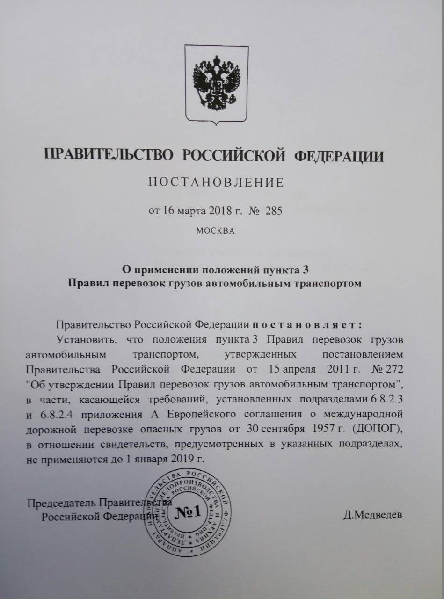

Ахияров Инсаф Илфатович
Начальник отдела сбыта
Телефон: (34783) 6-33-77
e-mail: Ahiyarov_II@nefaz.ru
Стерлядев Алексей Витальевич
Заместитель начальника отдела сбыта - руководитель группы
Телефон: (34783) 2-34-69, 6-31-46
Факс: (34783) 2-34-69
e-mail: sterlyadev.dp@nefaz.ru
Красноперова Марина Анатольевна
Ведущий специалист группы по продвижению запасных частей
Телефон: (34783) 6-33-45, 2-27-27
e-mail: zp@nefaz.ru
ICQ: 479-115-726
Кокорина Индира Шайхинуровна
Ведущий специалист группы по продвижению запасных частей
Телефон: (34783) 6-38-70
e-mail: kokorina.os@nefaz.ru
Вахитов Алмаз Флюсович
Ведущий специалист по продажам
Телефон: (34783) 2-27-75, 6-33-64
Факс: (34783) 2-27-75
e-mail: vaxitov.os@nefaz.ru
Решитова Ольга Валерьевна
Решитова Ольга Валерьевна
Телефон: (34783) 2-27-07, 6-31-46
Факс: (34783) 2-34-69
e-mail: reshitova.op@nefaz.ru
Зимин Алексей Юрьевич
Специалист по продажам
Специалист по продажам
e-mail: zimin.omrds@nefaz.ru
Курганов Владимир Александрович
Генеральный директор
Телефон: (34783) 6-22-56
Факс: (34783) 2-32-16
e-mail: nefaz@nefaz.ru
Валиахметов Денис Маратович
Заместитель генерального директора по безопасности
Приемная: (34783) 6-20-16
e-mail: pr-nefaz-cust@nefaz.ru
Акимов Денис Юрьевич
Заместитель генерального директора по коммерции
Телефон: (34783) 6-20-16
e-mail: pr-nefaz-cust@nefaz.ru
Хазиев Борис Илюсевич
Заместитель генерального директора - директор по производству
Телефон: (34783) 6-22-66
e-mail: KhazievBI@nefaz.ru
Корепанов Евгений Борисович
Заместитель генерального директора - директор по развитию
Телефон: (34783) 6-22-01
Приемная: (34783) 6-36-19
e-mail: korepanov@kamaz.ru
Мухаметдинов Юрис Абелгасович
Заместитель генерального директора по управлению персоналом
Приемная: (34783) 6-25-17
e-mail: MuhametdinovYA@nefaz.ru
Информация по вакансиям
Телефон: 8 (34783) 6-22-74
Смолин Владимир Александрович
Директор по планированию, приемке и отгрузке техники НЕФАЗ в г. Нефтекамск
Телефон: (34783) 6-38-69
e-mail: SmolinVA@nefaz.ru
Донцов Юрий Михайлович
Главный специалист по планированию и контролю производства прицепной техники
Телефон: (34783) 6-39-36
e-mail: dontsovyu@nefaz.ru
Фазылбиков Марсель Фидарисович
Начальник бюро
Телефон: (34783) 6-38-51
e-mail: FazylbikovMF@nefaz.ru
Гареев Айрат Ахнафович
Ведущий специалист по планированию и доставке прицепной техники
Телефон: (34783) 6-25-34
e-mail: GareevAA@nefaz.ru
Галиев Илдус Гарифович
Начальник участка приемки и отгрузки прицепной и специальной техники НЕФАЗ
Телефон: (34783) 6-24-24
e-mail: GalievIG@nefaz.ru
Салимьянов Альберт Ангамович
Старший мастер
Телефон: (34783) 6-23-24
e-mail: caa@nefaz.ru
Гайнутдинова Светлана Викторовна
Ведущий инженер
Телефон: (34783) 2-01-35
Гайнетдинова Динара Явдатовна
Специалист (Развитие сервисной сети)
Телефон: (34783) 6-27-71
Идиятуллин Артур Алмазович
Начальник станции технического обслуживания (СТО)
e-mail: idiyatullin.ceh24@nefaz.ru
Габдрахманов Ринат Мугалимович
Ведущий специалист станции технического обслуживания (СТО)
Телефон: (34783) 6-21-88
e-mail: ogiso8@nefaz.ru
Коровина Лариса Насимяновна
Cпециалист станции технического обслуживания (СТО)
Телефон: (34783) 6-26-10
Телефон: (34783) 6-26-10
СПРАВОЧНАЯ ИНФОРМАЦИЯ О ДОПУСКЕ ТРАНСПОРТНЫХ СРЕДСТВ К ПЕРЕВОЗКЕ ОПАСНЫХ ГРУЗОВ СОГЛАСНО ПРИКАЗУ МВД РОССИИ ОТ 29.11.2017 Г. №900
19 марта 2018 года на официальном интернет-портале правовой информации (pravo.gov.ru) опубликовано постановление Правительства Российской Федерации от 16 марта 2018 г. № 285 «О применении положений пункта 3 Правил перевозок грузов автомобильным транспортом». 
Согласно указанному Постановлению, до 1 января 2019 года на территории Российской Федерации требования подразделов 6.8.2.3 и 6.8.2.4 приложения «А» Европейского соглашения о международной дорожной перевозке опасных грузов от 30 сентября 1957 г. (ДОПОГ) в отношении свидетельств об официальном утверждении типа цистерны и об испытании или проверке цистерны применяться не будут. Сообщением от 16 марта 2018 г. № 285 МВД России информирует, постановление Правительства РФ от 22 декабря 2018 г. №1631 устанавливает, что до 1 января 2021 года свидетельства о допуске к перевозке опасных грузов будут выдаваться без истребования документа об официальном утверждении типа цистерны.
В связи с принятием указанного нормативного правового акта ПАО «НЕФАЗ» прекращает выдачу Свидетельства об официальном утверждении типа цистерны и Свидетельства об испытании или проверке.
Телефон для справок: 8 (34783) 6-25-61 Газиев Халил Хайдарович.